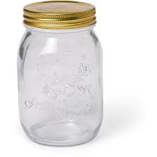
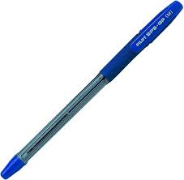
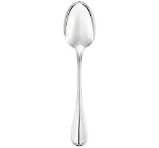

CASE STUDY BETWEEN GOOGLE LENS AND MOBILENET
VS
Mobilenet
-
Test Image -

- Test Image -
- Test Image -
- Test Image -
- Test Image - 
-
Test Image -

- Test Image - 
- Test Image -
- Test Image - 
Output on GOOGLE LENS - gala
Output on Mobilenet Model - apple
Result - Mobilenet Is More Accurate
Output on GOOGLE LENS - ball
Output on Mobilenet Model - mouse
Result - Google lens Is More Accurate
Output on GOOGLE LENS - banana
Output on Mobilenet Model - banana banana
Result - both are Accurate
Output on GOOGLE LENS - mask
Output on Mobilenet Model - earphones earphones
Result - Mobilenet Model Is More Accurate
Output on GOOGLE LENS - jar
Output on Mobilenet Model - jar
Result - Both are Accurate
Output on GOOGLE LENS -
Output on Mobilenet Model -
Result -
Output on GOOGLE LENS - metal rode
Output on Mobilenet Model - pipe
Result - Both Are Somewhat Accurate
Output on GOOGLE LENS - cat
Output on Mobilenet Model - cat
Result - Both Are Accurate
Output on GOOGLE LENS - fork
Output on Mobilenet Model - pan
Result - Google lens Is More Accurate
Developed by - Pradyumna Nilesh Piprade